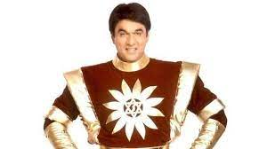

Shaktimaan has superhuman powers that lie inside his body in his seven chakras of Kundalini attained through meditation. Shaktimaan worships God through the symbol Om. Truthfulness is his motto. He can even separate his body into five different bodies of fire, wind, water, earth, and sky.He is an expert, skilled and intelligent fighter and has fought with super-skilled enemies. He possesses physical powers like unlimited speed (up to the speed of light), strength, durability as well as psychic powers like telepathy, teleportation, telekinesis, etc.
> 